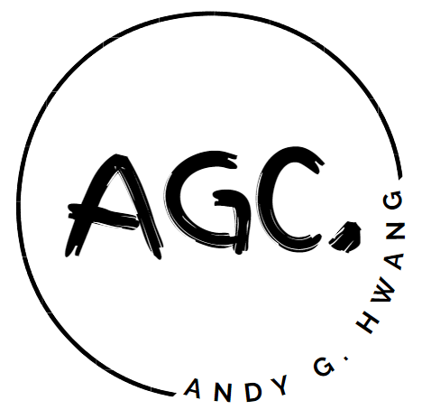
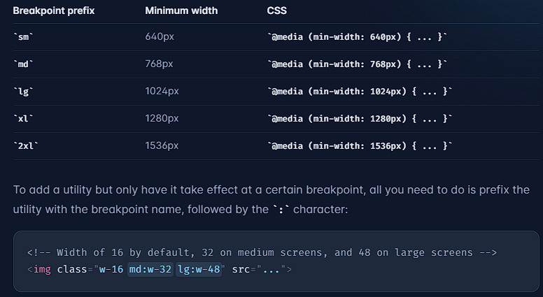
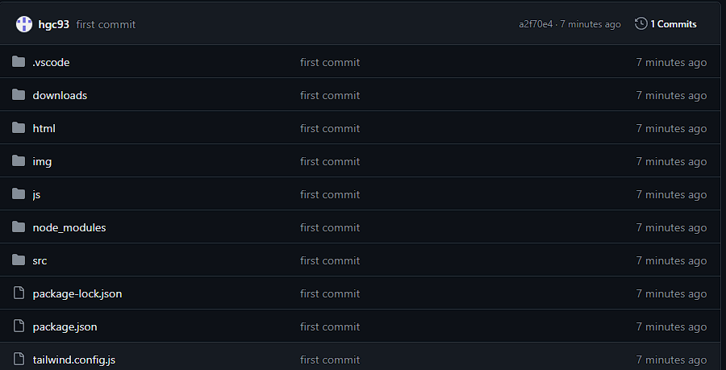

(Document I.T. Website Project)
March 8, 2024
-
Created multiple icon ideas for website using
Canva


- Changed navbar design and color theme
Before

After
-
Added responsiveness to site (dynamically adjust based on window
size)
- Tailwind provides easy way to do this

(Document I.T. Website Project)
March 7, 2024
Git and Github
- Git is a Distributed Version Control System (DVCS)

- Basic Git commands
-
Initialize: create new git repository (.git directory)
-
Add: updates index and prepare content in staging area
-
Commit: takes snapshot of changes and update repository
-
Pull: fetches changes from remote repository i.e. github
- Push: commits local repository to remote
- Advanced Git commands
-
Branching: allows for parallel development through
separate lines of development
-
Merging: integrate change from one branch into another
-
Rebasing: move starting point of branch to different
commit

-
Installed git and initialized, added, and committed first git repo
-
Created github
account
and pushed first git repository to the hub

- Git and github will be added to workflow
(Document I.T. Website Project)
March 6, 2024
-
Learning
Tailwind

- Open source released 2019
- No pre-designed UI components like Bootstrap
-
Small, single purpose CSS classes applied to HTML elements
- Efficient, customizable, performance (low level)
- Purges unused CSS code
-
Don't follow tutorials, instead use
documentation
and
cheatsheet
- Successfully implemented Tailwind to website project

(Document I.T. Website Project)
March 5, 2024
-
Goal is to be able to reuse HTML code (templating) across multiple
HTML pages (i.e. edit navbar/footer in one place rather than all
pages)
-
Source used
https://www.youtube.com/watch?v=AiQqip_pVbA
- Successfully created custom HTML templates using Javascript
-
Create custom HTML tags

-
Create JS file and link it

-
Create custom class that extends HTMLElement class

-
Use connectedCallback() function to activate when connected and
insert HTML with this.innerHTML function

-
Connect custom HTML tag with custom class

-
Now if I want to change navbar content, I only need to make change
in one file
-
Creating HTML templates is extremely useful and allows for code
reusability
-
All of my head elements are simplified by using custom HTML tags

(Document I.T. Website Project)
March 4, 2024
- Became familiar with VSCode and its extensions again
- Created bare-bones template of website project
-
Revisited HTML and CSS syntax with
w3schools
- This is what site looks like on first day